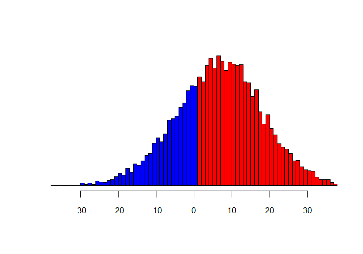

Week 7: The “Ground Game”
For the first time since early August, FiveThirtyEight’s bpredicted winner for the 2024 presidential election has changed. After nearly three months of a slight lead for the Harris campaign in the site’s simulation counters, this weekend’s simulations pointed to a slightly higher likelihood for the Trump campaign, with the Republican nominee winning 52 times out of 100.
Some might consider this shift to be a referendum on a campaign that is facing the difficult task of keeping up its momentum from this past summer. Did Harris and her team play too far to the left, right, or center? Could they have strategized differently to grow their lead instead of shrinking it, or were too many things outside their control?
FiveThirtyEight’s prediction no longer classifies Arizona and Georgia as “toss-up” states; they are now marked as “leaning Republican” as a result of trends in their aggregate polling. With Harris’ chance of winning Southern swing states declining, her path now relies even more heavily on the “Rust Belt” or “blue wall” states of Michigan, Wisconsin, and Pennsylvania. Analyzing these three states is increasingly crucial to a final prediction. Last week’s result, suggesting that Harris would sweep all seven swing states, may have turned out to be an overestimate for the Democrats, but winning these three alongside Nevada would still give Harris a path to 270.
In this graph of polling against vote share in these states, the Republicans have a steeper slope (closer to y=x) in all three states. This suggests that the predictive power of polling might be more highly correlated with vote share for them than for Democrats (i.e. Democrats might have more error / a higher standard deviation in poll estimates).
Focusing in on Pennsylvania in particular, we can run a series of simulations based on past polling and election results that allow us to estimate vote share more closely. First, we need a prediction on the number of eligible voters (using a generative additive model and OLS model). Then we will create a prediction of the probability that a voter will both turn out and cast a vote for a given party this year, then we will simulate this choice on every expected voter.
There is a clear linear trend in the number of expected voter-eligible population as shown below:
Next, fitting GLM models to a dataset of poll vs. final election results leads to very close probabilities for a single voter, at 27.06% (D) vs 27.16% (R) (including turnout). With the slightly higher probability, the simulations suggest a significantly higher turnout margin for Trump. However, incorporating a prior distribution that includes the standard deviation changes things considerably, as the Democrats also have a higher standard deviation. Running simulations for win margin with the standard deviation included gives a more mixed picture, with a slight lead for the Democrats:
I repeated this process for each of the other six swing states:
Michigan Wisconsin Nevada Arizona Georgia  North Carolina
These simulations suggest that out of the seven, the Democrats have the advantage in Michigan, Wisconsin, and Pennsylvania, but the Republicans have it in the other four. This leads to a much closer new electoral prediction of 270 votes for Democrats to 268 for Republicans. The closeness here seems to further support that the popular vote will be extremely close as well, so I don’t see a reason this electoral prediction should change my previous popular vote prediction of 50.89% for Harris and 47.95% for Trump.
However, all of this appears to be within a standard deviation, meaning it is still fundamentally a best guess for a toss-up situation.
When everything is close enough to be within a standard deviation, it can certainly be hard to assess whether a campaign can tip the scales. Even if you happen to be Allan Lichtman (https://www.theatlantic.com/ideas/archive/2024/10/allan-lichtman-election-win/680258/) and believe that campaigns don’t have much of an impact beyond the “fundamentals,” when elections are this close a tiny impact could be a winning one.
So what strategy is each campaign standing by in its final days? This article in the New York Times (https://www.nytimes.com/2024/10/13/us/politics/trump-harris-campaign-ground-game.html) suggests that Harris’s out-fundraising of Trump has affected each of their ground games to an extent. While the Harris campaign is filling field offices and aiming to turn out as many voters as possible, the Trump campaign is operating through more third-party organizations (who have just recently been allowed by the FEC to conduct door-to-door campaigning) and focusing closely on a smaller group of low-turnout, but potentially supportive, voters.
The ground game is no longer limited to in-person door-knocking, in part due to the advent of texts as a campaign technique. Some wonder whether such text messages even work as a method of ground-game contact, and it is often acknowledged that they are less valuable than in-person outreach. Whether or not they’re effective, they’re certainly being utilized in full: the parties appear to be neck-and-neck in text outreach, and nearly half the population surveyed in one story ((https://abcnews.go.com/Politics/close-fight-trenches-ground-game-presidential-race/story?id=114780589)) was contacted over text by one or both campaigns. Even more have been contacted in key swing states.
Despite the benefits of the in-person ground game, it is much more difficult to reach such large swaths of the population offline: even with many field offices and volunteers, both campaigns together have only approached 6% of the population in person.
But what about other forms of campaigning, most notably holding events? Do nearby events contribute to the efficacy of a ground game? Despite the Democrats’ fundraising advantage and possibly more comprehensive approach to door-to-door campaigning, it doesn’t necessarily reflect in the number of campaign events they are holding.
Harris held more campaign events than Trump until the end of September, after which Harris’s event numbers declined and Trump’s increased. Interestingly, if we compare this 2024 graph to the 538 poll average for Harris, it looks like Harris’s peak in the polls was at a similar time as her peak in events:
One could theorize that this is because the events themselves drive more publicity and improve poll performance. If 2016 and 2020 are anything to go off of, the greatest number of events from both parties will happen in the next three weeks, showing a dramatic uptick on the graph. However, it will be interesting to see whether Harris returns to hosting more events than Trump and if her poll performance continues to tail her event strategy.
On the other hand, events may not directly affect polling: it could be a case of a common confounding variable, but I’m unsure what such a variable might be.
With just over two weeks left until the election, it will be crucial for both campaigns to maximize turnout for their bases as much as possible.